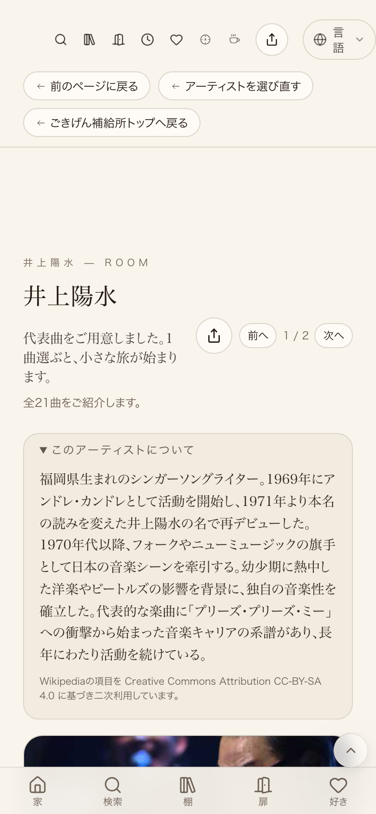
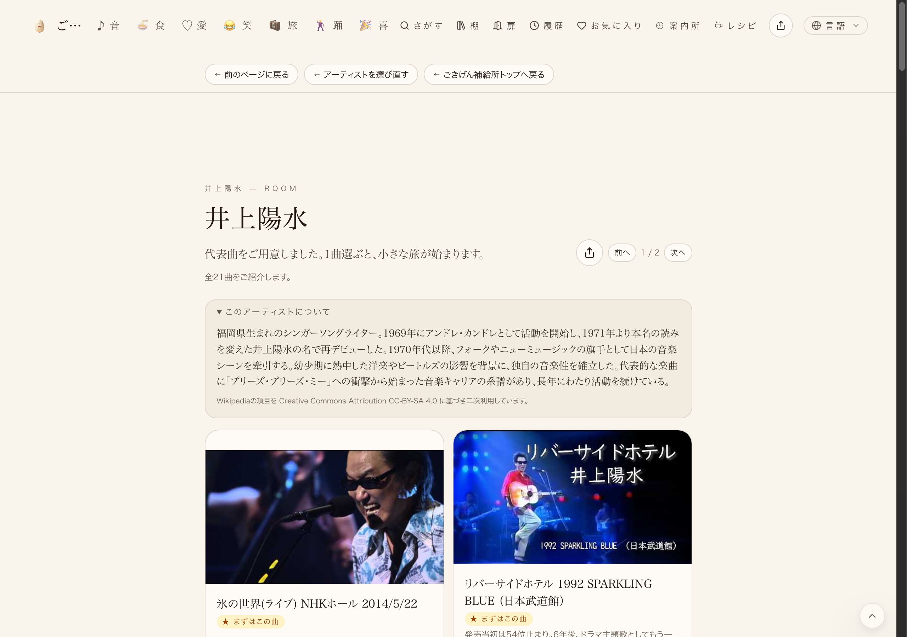
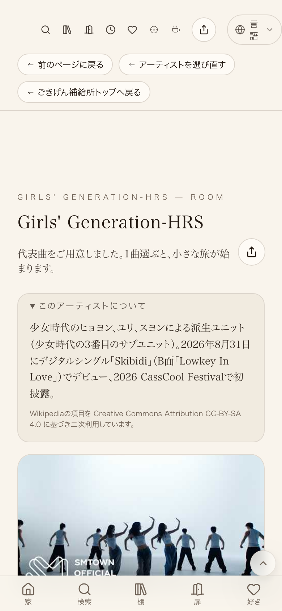

井上陽水・モバイル390px: concierge top=8.8px left=8.8px 差0px ×4件 井上陽水・デスクトップ1280px: concierge top=11.4px left=11.4px 差0px ×3件 少女時代・モバイル390px: concierge top=8.8px left=8.8px 差0px ×3件 全10件、上余白と左余白の差はすべて0px(許容1px以内)



| 確認項目 | 結果 |
|---|---|
| 井上陽水ページ・モバイル390px幅(concierge×4件) | 上8.8px／左8.8px・差0px |
| 井上陽水ページ・デスクトップ1280px幅(concierge×3件) | 上11.4px／左11.4px・差0px |
| 少女時代ページ・モバイル390px幅(concierge×3件) | 上8.8px／左8.8px・差0px |
| 行内カードの高さ揃い(18グループ) | 全グループ差0px |
| 棚編集ボタンとバッジの重なり | 0件 |